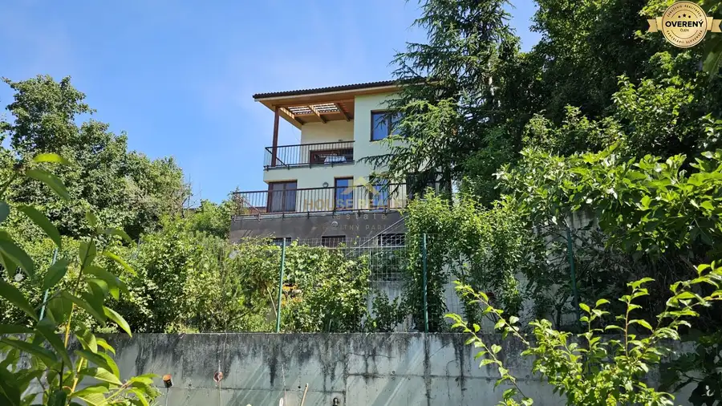
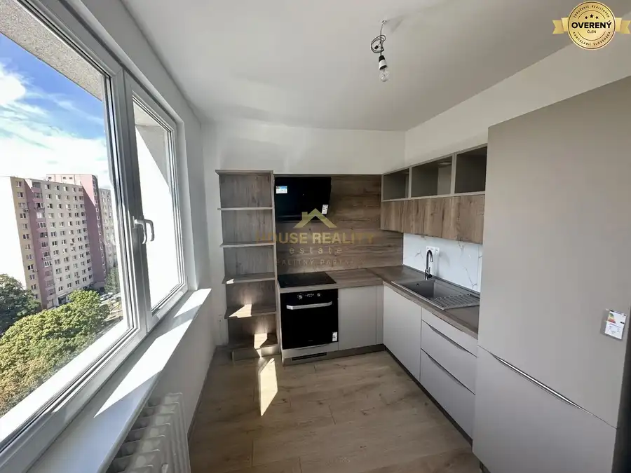
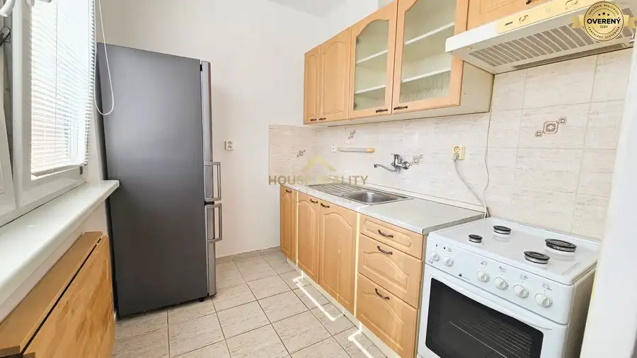

Slnečný pozemok pri vode Malý Dunaj, Nová Dedinka, okres Senec
Nová Dedinka
- Plocha591 m²
- Vlastníctvoosobné
O nehnuteľnosti
Atraktívna a vyhľadávaná lokalita v kľudnom, tichom prostredí v tesnej blízkosti pri vode-Malý Dunaj. Pre teba, alebo ako investičná príležitosť v krásnej lokalite, kde už sú v blízkosti postavené rekreačné domy. Ponúkam na predaj atraktívny pozemok-rekreačná oblasť v blízkosti Malého Dunaja asi 750 m od obce Nová Dedinka, časť Zlatý Karas. Je to prvý pozemok od vody, kde treba dodržať iba ochranné pásmo povodia Dunaja a to je po novom 12 m od vody, mierne svahovitý. Možnosť výstavby rekreačného domu. V blízkosti pozemku je elektrina, treba si dať navŕtať studňu a urobiť žumpu-septik. Momentálne k pozemku vedie nespevnená cesta, na jeseň by sa mala urobiť nová cesta, kde by mala byť vybudovaná kanalizácia aj elektrina v zemi. Je to v riešení. Výmeru pozemku si viete vybrať od 591 m2 až po 751 m2. Šírka pozemkov je 20 m. Ak ste rybár, alebo máte radi člnkovanie a život pri vode, kde stretnete rôzne zvieratka z tohto prostredia, ponuka je práve pre vás. Vzdialenosť od Bratislavy je cca 20-25 km, od Senca cca 10-15 km. Nová Dedinka, Dedinka pri Dunaji, Nová Ves pri Dunaji. Prípadná cenová dohoda po osobnom stretnutí je možná.
Parametre
| Rozloha pozemku | 591 m² |
|---|---|
| Vlastníctvo | osobné |
| Voda | studňa |
| El. napätie | 230/400V |
| Plyn | nie |
| Kanalizácia | žumpa |
| Inžinierske siete | blízko |
| Terén | mierny svah |
| Prístupová cesta | neupravená cesta |
| Dátum zverejnenia | 28. 2. 2025 |
Kde to je
Mohlo by Vás zaujímať

Byt10 2 450 €7 i RD, výhľad na Rakúsko, 2 x parkovanie, Dlhé diely II, Karlova Ves Dlhé diely, Bratislava 7-izbový240 m² PONUKA DOMU: Ponúkame na prenájom v nádhernom prostredí s krásnym výhľadom 7 izbový, kompletne zariadený rodinný dom o rozlohe 240 m2 a 600 m2…
Byt10 247 000 €Kompletná rekonštrukcia 2 i byt, výhľad, Galbavého ul, BA IV, Dúbravka Dúbravka, Bratislava 2-izbový56 m²9. podlažie POPIS BYTU: Ponúkame na predaj krásny, kompletne zrekonštruovaný 2 izbový byt s nepriechodnými izbami v časti Bratislava IV, Dúbravka na ulici…
Byt10 167 000 €Predaj vyhľadávaný 1 izbový byt, Saratovská ulica, BA IV. Dúbravka Dúbravka, Bratislava 1-izbový37.6 m²5. podlažie Realitná kancelária House reality ponúka na predaj priestranný 1 izbový byt v obľúbenej lokalite Bratislava IV – Dúbravka, na ulici Saratovská. Byt s…